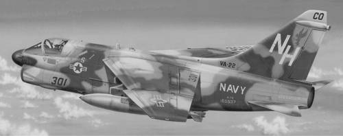
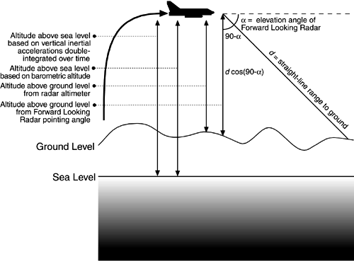

3.2 Requirements and Qualities
Figure 3.2 shows the A-7E Corsair II. It is a single-seat, carrier-based attack aircraft used by the U.S. Navy throughout the 1960s, 1970s, and 1980s. An earlier version, the A-7C, was among the very first production aircraft in the world to be equipped with an onboard computer to help the pilot with navigation and "weapon delivery" (the military euphemism for attacking a ground target).
Used with permission and under copyright of Squadron/Signal Publications, Inc.

The A-7E's onboard computer is a small, special-purpose IBM machine for which no compiler exists; programming is in assembly language only. The computer has special registers connected to analog-to-digital and digital-to-analog converters that let it receive and send data to almost two dozen devices in the aircraft's avionics suite.
In broad terms, the A-7E software is responsible for reading sensors and updating cockpit displays that help the pilot drop weapons on a target. The A-7E software does not actually fly the aircraft, as more modern avionics systems do.
The following are the primary sensors the software reads and manages:
An air probe that measures barometric pressure and air speed. A forward-looking radar that can be aimed in azimuth and elevation and returns the straight-line range to the point on the ground at which it is pointed. A Doppler radar that reports ground speed and drift angle (the difference between the direction in which the aircraft's nose is pointed and the direction in which it is moving over the ground). An inertial measurement set (IMS) that reports accelerations along each of three orthogonal axes. The software must read these accelerations in a timely manner and integrate them over time to derive velocities, and it must integrate the velocities over time to derive the aircraft's current position in the physical world. It also must manage the alignment and compensate for the drift of the axes to keep them pointed north, east, and vertical, respectively, so that the measurements accurately correspond to the aircraft's frame of reference. An interface to the aircraft carrier's inertial measurement system, through which the aircraft can compute its current position while on board a ship. Sensors that report which of the A-7E's six underwing bomb racks hold weapons and which of more than 100 kinds of weapons in the aircraft's repertoire they are. The software stores large tables of the parameters for each weapon type, which let it compute how that weapon moves through the atmosphere in a free-fall ballistic trajectory. A radar altimeter that measures the distance to the ground.
The cockpit display devices managed by the software include some that are display only and some by which the pilot communicates with the software, as follows:
A map display that always shows the aircraft's current location by moving a back-lit filmstrip as the aircraft travels. The pilot can choose the map's orientation so that the top corresponds either to the current heading or to true north. A heads-up display—a device that projects digital and iconographic information on a clear window between the pilot and the windscreen. Since the pilot's head position is assumed fixed and known, the display can be used to overlay information about the real world, such as the position of the target or a line showing the aircraft's direction of travel. A keypad and a trio of small alphanumeric display windows. With the keypad, the pilot can request approximately a hundred kinds of digital information from the computer. A bank of switches on the computer control panel allows the pilot to choose the desired navigation and weapon delivery modes. Various lights and dials and an audible signal.
The pilot communicates the location of a ground target (or a navigational waypoint) to the software in a number of ways, including the following:
Keying in its latitude and longitude via the keypad Slewing the map using a joystick until its coordinates are under the center crosshairs and then "designating" it by pushing a special button on the control stick Aiming the forward-looking radar to the point and designating it Slewing a special symbol on the heads-up display until it overlays the point of interest on the ground and then designating it
The software then provides navigational information (direction, distance, time to go) and directional cues on the heads-up display that take the aircraft to the designated location.
The pilot can choose from over two dozen navigation modes, based on which sensors are most reliable under the conditions of the moment. The software has at least five direct and indirect ways to calculate the aircraft's current altitude, including a trigonometric scheme using the range and elevation angle of the forward-looking radar as components of a triangle (see Figure 3.3). There are more than 20 weapon delivery modes, all demanding in terms of the real-time calculations (repeated 25 times every second) necessary to maintain the A-7E's bombing accuracy.

A-7Es were retired from active duty in the late 1980s, but current-generation fighters feature a heads-up display and weapon delivery and navigation modes that show heavy influence from the Corsair.
The architecture we will present in this chapter is not the architecture for the original software but that for a redesign project launched by Navy software engineers using the A-7E as a demonstration project for their ideas (see the sidebar About the A-7 Project). The qualities that the software system was expected to have included real-time performance and modifiability for expected changes. Specifically, the performance requirements were stated in terms of updates per second of the A7-E's displays and weapon delivery calculations. The modifiability requirements dealt with making changes to the weaponry, the platform, the symbology on the display, and the addition of new input through the keypad.
|
"In the mid-1970s, it was clear to computer scientists at the Naval Research Laboratory (NRL) in Washington, D.C., that much of the computer science technology being developed in academia and laboratories was not being used by the developers of software for Navy systems." So began a typical description of the Navy's Software Cost Reduction (SCR) project, or, as it was more popularly known, the A-7 project. Most descriptions went on to say that NRL's response was to choose a high-fidelity, challenging Navy program (the software for the A-7E aircraft) and then redesign and reimplement it using that under-utilized technology. The point was to create a convincing demonstration of the technology's value in real-world applications.
Between the lines, however, was the fact that those scientists had some very specific computer science technology in mind: primarily, the use of information hiding as the design strategy. This is not surprising, because the impetus behind the A-7 project was the man who first wrote about information hiding as a design technique, David Parnas. Parnas wanted to find out whether his ideas (and others, such as cooperating sequential processes) could be used in a system with inflexible requirements, demanding memory constraints, and tight time budgets. If not, he wanted to find out why not and how to improve his ideas so that they could work. Vague methods demonstrated only on toy problems were clearly not enough. The idea behind the A-7 project was to leave a complete engineering model—documentation, design, code, methodology, principles—that others could emulate, all reported in the open literature.
The project started in 1977 with a couple of people working part-time. It soon chose the demonstration application: The software for the A-7E was a hard real-time system (meaning it absolutely had to meet its timing requirements), it was embedded (having to interface with all sorts of esoteric hardware devices), it was absolutely authentic, and it was very tightly constrained by the computer's tiny memory capacity: only 32,000 16-bit words. If the new techniques succeeded in duplicating this program, they would succeed anywhere.
The first product was a requirements specification for the software. It hadn't been intended, but when Parnas asked the Navy if he could obtain the A-7's requirements document, the response was "What requirements document?" Realizing that they had to have a standard against which to test and judge when they were done, the software engineers at the NRL reluctantly set about documenting the requirements for the software. The team not only produced a requirements document but, more important, produced a method for producing it. SCR-style requirements documents are now widely used for real-time embedded software systems.
Then the small team concentrated on designing the interfaces to all of the modules. The few people working on the project were pioneering what would today be called object-based design. In designing to accommodate future changes, they were also building what would today be called a domain model. In creating a standard, re-usable design, they were building what would today be called a reference architecture (see Chapter 12). They had to balance their time among inventing new software engineering approaches, learning the avionics domain, writing papers to get the word out and, last but hardly least, producing the software.
The project implementation phase was staged by deploying a tiny subset of the software to demonstrate the ability to generate executable code, and then deploying two successively larger subsets, and finally the entire system. The uses structure, one of the three architectural structures highlighted in the case study, allowed them to define these subsets quickly and easily to meet their needs. By the time the second of the three subsets was under way, it was clear to project management that most of what they had set out to learn had been learned and that slogging through to the complete reimplementation was not going to be practical given the small staff size, small budget, and still infantile expertise in the avionics domain. In 1987, the project demonstrated the successful completion of the second subset and was completed. The subset was carefully chosen to include part of every second-level module and to perform a useful and nontrivial navigation function.
The team concluded that information hiding is not only compatible with real-time embedded systems but in many ways ideal for it. Careful attention to module interfaces and module interface specifications paid off in essentially eliminating integration as a project phase: There were practically no errors of the type usually associated with the integration step. The software was able to meet its timing deadlines but could not compete with years of handcrafted assembly code in terms of memory efficiency. It is hoped that memory efficiency is now and will remain less of a concern than it was in 1977.
The architecture we present in this case study is that of the completed design, the one that led to the subset of 1987. There is no reason to believe that it would not have also led, unchanged, to the full reimplementation of the system. In any case, it is a very good example of paying attention to different architectural structures or views in order to achieve particular goals, and we present it in that light.
Why, after all this time, is the A-7E still interesting? Because it holds two lessons. One is that information hiding is a viable and prudent design discipline—a lesson that has been well heeded by the community. The second is that carefully engineering different structures of an architecture yields payoffs in terms of achievable qualities—a lesson not so well heeded, and so we repeat it in the context of the current interest in software architecture in the hope that, through repetition, the lesson will be better absorbed.
— PCC
|

|